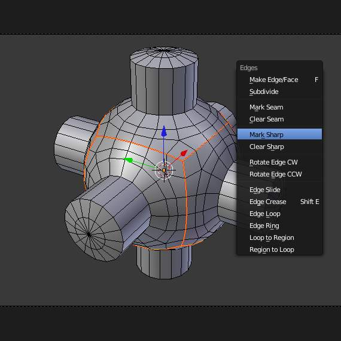
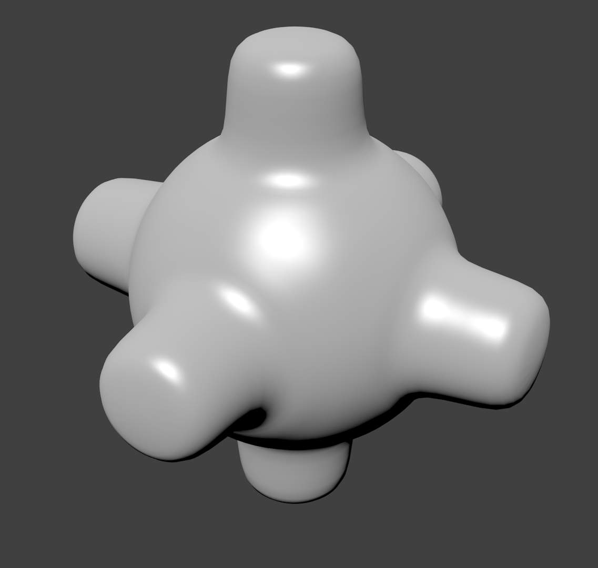
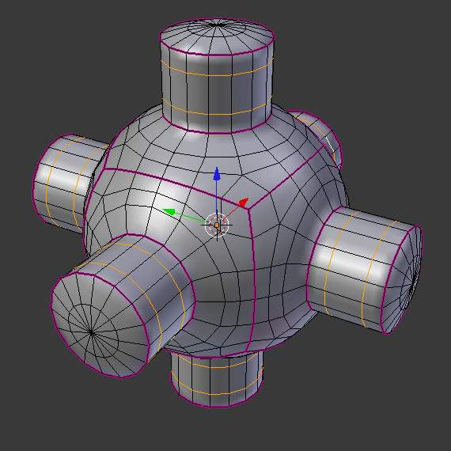

平滑¶
Mesh Shading¶
{kind=link}
{kind=link}
{kind=link}
As seen in the previous sections, polygons are central to Blender. Most objects are represented by polygons and truly curved objects are often approximated by polygon meshes. When rendering images, you may notice that these polygons appear as a series of small, flat faces.
Sometimes this is a desirable effect, but usually we want our objects to look nice and smooth. This section shows you how to visually smooth an object, and how to apply the Auto Smooth filter to quickly and easily combine smooth and faceted polygons in the same object.
The last section on this page shows possibilities for smoothing a mesh’s geometry, not only its appearance.
Smooth Shading¶
参考
Ctrl-F {kind=link}
{kind=link}
The easiest way is to set an entire object as smooth or faceted by selecting a mesh object, and in 物体模式, click Smooth in the Tool Shelf. This button does not stay pressed; it forces the assignment of the “smoothing” attribute to each face in the mesh, including when you add or delete geometry.
Notice that the outline of the object is still strongly faceted. Activating the smoothing features doesn’t actually modify the object’s geometry; it changes the way the shading is calculated across the surfaces, giving the illusion of a smooth surface. Click the Flat button in the Tool Shelf ‘s Shading panel to revert the shading back to that shown in the first image above.
平滑 parts of a mesh¶
Alternatively, you can choose which edges to smooth by entering 编辑模式, then selecting some faces and clicking the Smooth button. The selected edges are marked in yellow.
When the mesh is in 编辑模式, only the selected edges will receive the “smoothing” attribute. You can set edges as flat (removing the “smoothing” attribute) in the same way by selecting edges and clicking the Flat button.
Auto Smooth¶
参考
{kind=link}
{kind=link}
It can be difficult to create certain combinations of smooth and solid faces using the above
techniques alone. Though there are workarounds
(such as splitting off sets of faces by selecting them and pressing Y),
there is an easier way to combine smooth and solid faces, by using Auto Smooth.
Auto smoothing can be enabled in the mesh’s panel in the Properties Editor. Angles on the model that are smaller than the angle specified in the Angle button will be smoothed during rendering (i.e. not in the 3D视图) when that part of the mesh is set to smooth. Higher values will produce smoother faces, while the lowest setting will look identical to a mesh that has been set completely solid.
Note that a mesh, or any faces that have been set as Flat, will not change their shading when Auto Smooth is activated: this allows you extra control over which faces will be smoothed and which ones won’t by overriding the decisions made by the Auto Smooth algorithm.
Edge Split Modifier¶
With the Edge Split Modifier we get a result similar to Auto Smooth with the ability to choose which edges should be split, based on angle - those marked as sharp.

Edges marked as sharp. |
{kind=link}
{kind=link}
平滑 the mesh geometry¶
The above techniques do not alter the mesh itself, only the way it is displayed and rendered. Instead of just making the mesh look like a smooth surface, you can also physically smooth the geometry of the mesh with these tools:
Mesh editing tools¶
You can apply one of the following in 编辑模式:
- Smooth
- This relaxes selected components, resulting in a smoother mesh.
- Laplacian Smooth
- Smooths geometry by offers controls for better preserving larger details.
- Subdivide Smooth
- Adjusting the smooth parameter after using the subdivide tool results in a more organic shape. This is similar to using the subdivide modifier.
- Bevel
- This Bevels selected edged, causing sharp edges to be flattened.
修改器¶
Alternatively, you can smooth the mesh non-destructively with one or several of the following modifiers:
- Smooth Modifier
- Works like the Smooth tool in 编辑模式; can be applied to specific parts of the mesh using vertex groups.
- Laplactian Smooth Modifier
- Works like the Laplacian Smooth tool in 编辑模式; can be applied to specific parts of the mesh using vertex groups.
- Bevel Modifier
- Works like the Bevel tool in 编辑模式; Bevel can be set to work on an angle threshold, or on edge weight values.
- 细分 Surface Modifier
- Catmull-Clark subdivision produces smooth results. Sharp edges can be defined with subdivision creases or by setting certain edges to “sharp” and adding an EdgeSplit modifier (set to From Marked As Sharp) before the Subsurf modifier.

Subsurf. |
|

3D视图 showing creased edges (pink) and added edges loops (yellow). |
{kind=link}
{kind=link}
{kind=link}